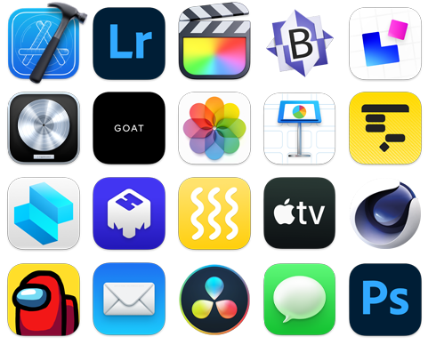

Financiamiento
Hasta 18 pagos mensuales fijos con tarjetas de crédito participantes
Más informaciónEl nuevo chip M1 diseñado por Apple lleva nuestra computadora de escritorio más versátil a otra dimensión. Ahora viene con un CPU hasta 3 veces más rápido, gráficos hasta 6 veces más veloces y nuestro Neural Engine más avanzado, que permite un aprendizaje automático hasta 15 veces más rápido. Podrás trabajar, jugar y crear con una velocidad y potencia que jamás habías imaginado. La Mac Mini es poder para conquistarlo todo.
Con los superpoderes del chip M1 de Apple
Ya llegó el primer chip diseñado específicamente para la Mac. El sistema en chip (SoC) M1 de Apple tiene 16,000 millones de transistores e integra CPU, GPU, Neural Engine, E/S y mucho más en un diminuto chip. Por eso, te brinda un rendimiento increíble, tecnologías exclusivas y una eficiencia energética líder en la industria.1 El chip M1 es más que un paso adelante: es la entrada al futuro de la Mac.
El chip M1 le da mucha más potencia y velocidad a la Mac Mini. El CPU de 8 núcleos tiene una velocidad de procesamiento hasta 3 veces mayor que la de la generación anterior2, sin modificar su icónico diseño cuadrado de 19.7 cm.
El GPU de 8 núcleos del chip M1 es el procesador gráfico más avanzado que hemos creado. Punto. Es por eso que la Mac Mini tiene los gráficos integrados más rápidos del mundo en una computadora personal, con un rendimiento gráfico 6 veces mayor que la generación anterior. Es un monumento a la potencia en un diseño increíblemente compacto.
Neural Engine de 16 núcleos. Es la mente maestra. El aprendizaje automático permite la automatización y aceleración de funciones como análisis de video, reconocimiento de voz, procesamiento de imágenes y mucho más. Además, gracias al chip M1 con Neural Engine de 16 núcleos y toda una gama de tecnologías avanzadas, el aprendizaje automático en la Mac Mini llega a un nivel superior.
macOS Big Sur fue creado para aprovechar todo el potencial del chip M1. El resultado es una Mac con un mejor rendimiento y muchos beneficios más. Trae grandes actualizaciones para las apps, un nuevo y espectacular diseño y funcionalidades de privacidad y seguridad líderes en la industria. Es nuestro software más avanzado en nuestro hardware más poderoso hasta ahora.
El chip M1 y macOS Big Sur trabajan en equipo para acelerar por completo el funcionamiento del sistema. La Mac Mini se activa casi al instante. Las cosas que haces todos los días, como ver fotos o navegar en Safari, son más rápidas. Y las apps más exigentes pueden usar toda la potencia que necesitan.
Aprovecha las poderosas apps diseñadas para funcionar con el chip M1. Sigue disfrutando tus apps de siempre gracias a Rosetta 2. Además, por primera vez puedes usar tus apps favoritas del iPhone y del iPad en macOS Monterey. En resumen, vas a tener la colección de apps más grande hasta ahora en tu Mac.
Aprovecha las poderosas apps diseñadas para funcionar con el chip M1. Sigue disfrutando tus apps de siempre gracias a Rosetta 2. Además, por primera vez puedes usar tus apps favoritas del iPhone y del iPad en macOS Monterey. En resumen, vas a tener la colección de apps más grande hasta ahora en tu Mac.
El dominio de la RAM se expande. El chip M1 trae hasta 16 GB de memoria unificada ultrarrápida. Con su memoria de baja latencia y gran ancho de banda, las apps pueden compartir datos eficientemente entre el CPU, el GPU y el Neural Engine para que todo sea más rápido y fluido.
La Mac Mini viene con almacenamiento flash con un SSD de hasta 2 TB20 para que puedas guardar toda tu biblioteca de fotos y videos, archivos y apps. Y con velocidades de hasta 3.4 GB/s21, las apps y los archivos se abren y se cargan al instante.
La Mac Mini es perfecta para un gran variedad de usos gracias a su tamaño compacto, increíble rendimiento y amplia selección de puertos. Y con toda la potencia del chip M1, en un diseño cuadrado de tan sólo 19.7 centímetros, la Mac Mini hace un gran trabajo dondequiera.
La Mac Mini convierte tu escritorio en una verdadera estación de trabajo. Sólo tienes que agregar un teclado, un mouse o trackpad y hasta dos monitores.
El GPU del chip M1 tiene el rendimiento de un procesador dedicado y te permite disfrutar juegos de gráficos avanzados con mayor velocidad de cuadros y mayor fidelidad.
El CPU de 8 núcleos, la superrápida memoria unificada y los aceleradores de aprendizaje automático del chip M1 te permiten ejecutar más pistas, plug-ins y filtros en Logic Pro de los que nunca había permitido la Mac Mini.
Desde instalaciones de arte hasta carteles digitales gigantes, la Mac Mini puede trabajar con las pantallas digitales más grandes y brillantes gracias a su increíble rendimiento, sus versátiles puertos de E/S y su incomparable eficiencia energética. Todo en un diseño ultracompacto.
Con dos puertos Thunderbolt/USB 4 increíblemente rápidos, dos puertos USB-A, HDMI 2.0, Wi-Fi 6 y Gigabit Ethernet, la Mac Mini está lista para todo.
Transfiere datos a una velocidad de hasta 40 Gb/s.22 Carga dispositivos externos. Y conecta un monitor externo hasta 6K y un segundo monitor con HDMI 2.0 hasta 4K.
La tecnología Wi-Fi 6 llega por primera vez a la Mac Mini, con un rendimiento superior y velocidades de hasta 1.2 Gb/s para transferir archivos y hacer respaldos con Time Machine a una velocidad supersónica.
Wi-Fi 6
de hasta 1.2 Gb/s22
Abre esta página con Safari
en tu iPhone o iPad.
Como Apple fabrica el iPhone, el iPad, el Apple Watch y la Mac, todos funcionan juntos a la perfección.
Más informaciónTrae una computadora que cumpla con los requisitos y obtén crédito para comprar una Mac nueva. Es bueno ara ti y para el planeta.
Más informaciónLista para acompañarte en todos los desafíos de la universidad.
Comprar con precios especiales de Apple para la educación Más información sobre la Mac en la educación superiorCon todo el poder para llevar a tu empresa al siguiente nivel.
Comprar para tu empresa Más información sobre la Mac en la empresaHasta 18 pagos mensuales fijos con tarjetas de crédito participantes
Más informaciónY devoluciones sin costos
Más información
Habla con un Especialista
por teléfono o por chat.
Llama al +58 414-9456-997.
Aprovecha al máximo tu nueva Mac
con la ayuda de un Especialista, que te
brindará desde información básica
hasta consejos útiles.